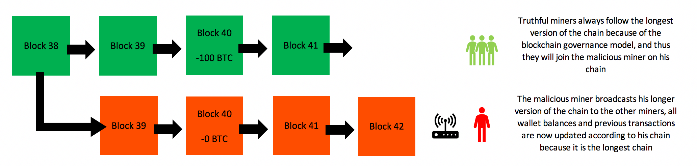

Day22|P2P網路(3)：暫時性分岔與叔塊獎勵
共識未能形成的小插曲：分岔
分岔指的是在區塊鏈進行過程中因為某些特定原因沒能達成一致性的狀態，根據分岔的原因與相容性又可以分成暫時性分岔、軟分岔、硬分岔三種。首先我們先來談暫時性分岔：
暫時性分岔(Temporary Fork)
在P2P網路中節點間必須達成共識，並且每個節點所儲存的資料必須一致，而我們在昨天的拜占庭將軍問題中已經稍微講述了共識間的求取方式，但實際上網路資訊的廣播並不是即時的，其中的步驟可以簡化成：
- 挖掘到新區塊
- 廣播新區塊
- 其他節點收到廣播的新區塊
- 其他節點開始驗證新區塊
- 其餘節點接受區塊後放棄目前挖掘的區塊，開始挖掘下一塊

因為網路與驗證哈希的運算都需要時間，因此在挖掘到新區塊到其餘節點驗證並接受該區塊會有一段時間上的落差，如果在這時間落差中有節點恰恰挖掘到另一個區塊(回憶一下挖礦所找尋的nonce並非是單一解)，整個區塊鏈網路就會進入暫時性分岔的階段，可以回憶一下之前的這張圖。

那既然暫時性分岔是POW機制與網路延遲下無可避免的結果，那區塊鏈該如何解決暫時性分岔並且回到同步的共識呢？
Bitcoin中的最長鏈機制
Bitcoin的解決方式是Winner Takes All，最後只有一條最長的鏈會被當作主鏈，在工作量證明的機制下，通常擁有最多算力的那條鏈同時會擁有最快的出塊速度而成為最長鏈。

圖片來源：mangoresearch
那其餘因為太短被捨棄的區塊又稱為孤兒塊(Orphan Block)，挖到孤兒塊的節點會因為最後未能成為主鏈的一部分而被捨棄，其上的所有交易也會因此通通不算數，自然也沒有產生區塊的獎勵了！
Ethereum中的叔塊(Uncle block)機制
但Bitcoin的平均出塊時間設定在十分鐘、Ethereum設定在15秒，兩者間的差距代表Ethereum出現暫時性分岔的機會與次數會遠遠多於Bitcoin。可以假設區塊從廣播到被接受都需要大概1秒的話，那麼Bitcoin出現孤兒塊的機會是1/600、Ethereum出現孤兒塊的機會是1/15。
Ethereum為了加速交易的認證與提升TPS而降低了出塊時間，也導致了孤塊比例的上升(實際上Ethereum的孤塊比例約落在6-8%上下，你可以到這裡查看最新的孤塊比例。)，所以如果同樣採用Bitcoin的最長鏈機制會造成礦工間的不公平，畢竟所挖出的區塊實際上也是合法的，只是因為廣播稍慢而沒辦法成為最長鏈。所以Ethereum透過的是另一種機制叔塊(Uncle block)來給予挖出叔塊的礦工比正常塊略少的獎勵。
叔塊如何被定義
首先我們必須定義叔塊是甚麼與叔塊名稱的由來，我們可以把暫時性分叉後主鏈所產生的第一個區塊稱為父塊，緊接著父塊的便是子塊，而暫時性分岔的支鏈上第一個區塊因為對於子塊來說是與父塊同輩份的，所以也稱為叔塊，但叔塊還有另一個條件就是叔塊必須被後面的子區塊採用入主鏈 才能算是叔塊，否則便只能被丟棄而形成孤兒塊。：

那為什麼會有人想把叔塊採用入主鏈？因為在主鏈上每採用一塊叔塊的礦工都能夠獲取1/32的出塊獎勵，透過獎勵機制去鼓勵主鏈上的礦工吸納叔塊！但Ethereum也限制每個區塊最多採用兩個叔塊為限。
如何計算叔塊獎勵
至於挖掘叔塊的礦工獎勵是如何計算的呢？這關係到叔塊是否有在暫時性分叉後的六代內被採納入主鏈，只有差距在六代內的叔塊會獲得獎勵，每間隔一層所獲得的出塊獎勵就會減少12.5%。
- 間隔一層：87.5%出塊獎勵
- 間隔兩層：75.0%出塊獎勵
- 間隔三層：62.5%出塊獎勵
- 間隔四層：50.0%出塊獎勵
- 間隔五層：37.5%出塊獎勵
- 間隔六層：25.0%出塊獎勵
關於代數的計算可以參考下圖：

但因為採納叔塊對於主鏈上的礦工也有益處，所以通常在兩至三代內叔塊就會被收入主鏈中，在Nanopool的出塊清單中你也可以看到由nanopool挖出的區塊中有哪些是叔塊、第幾代叔塊，其中區塊序號_u代數代表的便是叔塊(u即是Uncle的縮寫)！你也可以在Etherscan上看到每天產出叔塊的個數，平均每天會產出500塊左右的叔塊，高峰期甚至會超過一天2000塊。
叔塊對整體礦工的利益是好的嗎？
回憶一下我們在Day04|打造一個簡易的區塊鏈(3)：難度調整與確認哈希鏈有寫到如何調控出塊難度：
if average_time_consumed > self.block_time:
self.difficulty -= 1
else:
self.difficulty += 1
也就是當實際的出塊時間長於設定值便減低難度，若短於設定值便增加難度；而Ethereum出塊難度的調控是根據主鏈的出塊時間 來調控的，叔塊的礦工並不會被記入難度的調整之中，因此若有礦工挖掘叔塊便可以提升整體礦工的利益！
口說無憑，我們來做個簡單的計算：
全部礦工只挖掘主鏈、也不採納叔塊
出塊獎勵為R，假設在全部礦工只挖掘主鏈時的出塊時間為T，單位時間內的總利益便是R/T，如果持有算力的N%，則單位時間的預期收益便是R/T*N/100。
有x%的礦工專門挖掘叔塊
為了方便計算，我們這裡假設每一區塊在下一代便後被收入主鏈中，對於挖掘出叔塊的礦工而言獎勵便是0.875*R，因為有x%在負責挖掘叔塊，剩下(100-x)%便是在挖掘主鏈。對於兩種礦工而言：
- 專門挖掘主鏈的礦工
剩下(100-x)%在挖掘礦工會因為只剩下(100-x)/100的總算力在挖掘主鏈，持有算力的N%的礦工預期出塊收益就會變成：R/T*100/(100-x)*N/(100-x)。另外每在主鏈上產生一個區塊後，平均會產生x/(100-x)個叔塊，因此外加採納叔塊的獎勵為R/T/32*x/(100-x)*N/(100-x)。
總收益R/T*100/(100-x)*N/(100-x)+R/T/32*x/(100-x)*N/(100-x)會大於原本的R/T*N/100
- 專門挖掘叔塊的礦工
對於在側鏈上專門挖掘叔塊的礦工而言，同樣每在主鏈上產生一個區塊後，平均會產生x/(100-x)個叔塊，因此在側鏈上持有總算力的N%的礦工挖掘叔塊的獎勵為R/T*0.875*x/(100-x)*N/x，約分後可以得到R/T*0.875/(100-x)*N。
也就是當挖掘叔塊的算力超過12.5%時 ，挖掘叔塊的礦工也能夠取得比原本大家都擠在主鏈上更多的收益。
51%攻擊
其中一種攻擊區塊鏈的方式便是透過暫時性分岔的特性，也就是先在主鏈上付款給別人後後迅速使用過半的算力挖掘另一個區塊，使的原本包含付款交易的區塊之後因為長度小於主鏈而被遺棄成為孤兒塊，裏頭付款的交易自然就不算數了。詳細運作流程可以參考下圖：

圖片來源：Blockchain: how a 51% attack works (double spend attack)
51%攻擊需要取得整條鏈過半的算力才有可能達成，在這個網站中你可以看到每發起一小時51%攻擊所需要的成本，鏈上擁有的算力越多會造成攻擊者為了攻擊所需購入算力的成本越高，所以通常51%攻擊都是針對較為小眾的區塊鏈攻擊。
像是ETC便因為算力不足曾經被51%攻擊過(相關報導)，也因為算力的租借是以時間為單位的，增加入賬時所需要的確認區塊數可以有效增加發動51%攻擊的成本，但也會增加使用者所需要的等待時間。
暫時性分岔的講解就到此為止，明天我們就要進入到區塊鏈升級過程中必定會經歷的軟分岔與硬分岔！
到目前為止的文章都會放置在Github上。